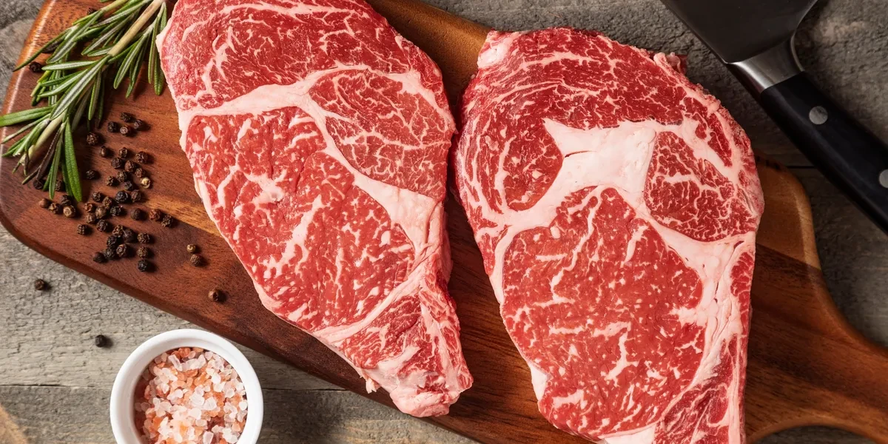
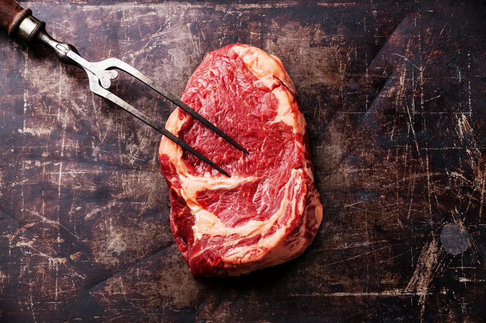
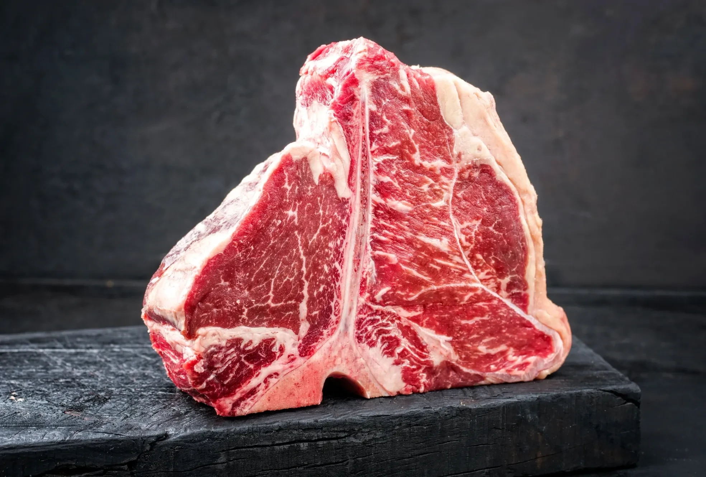
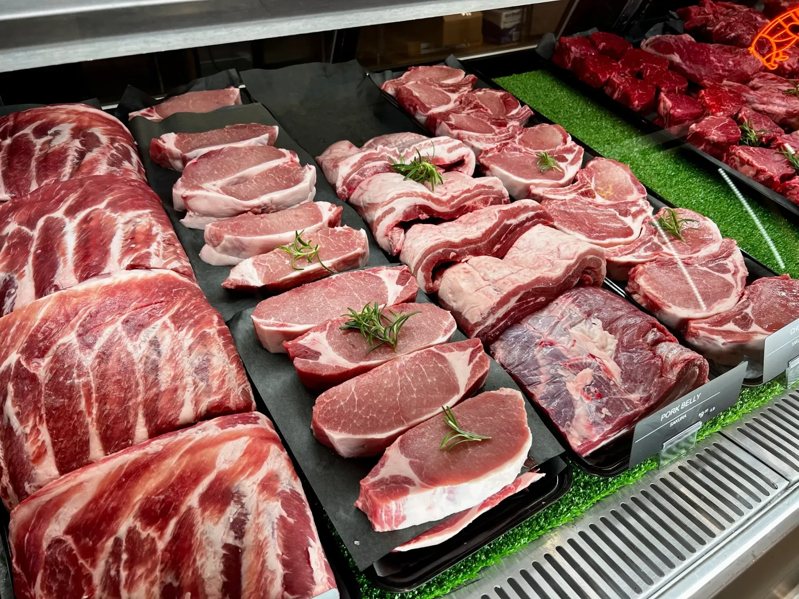

About Us
Great meals start with
great ingredients.
At San Francisco Meat Co., we believe great meals start with great ingredients. That's why we source only the finest meats — from imported Japanese Wagyu to premium, hand-selected cuts — and bring them straight to your kitchen with care and consistency.
Whether you're preparing a weeknight dinner or celebrating life's special moments, our meats are chosen for their flavor, quality, and reliability. With San Francisco Meat Co., you're not just buying meat — you're bringing home a culinary experience built on craftsmanship, trust, and tradition.

Hand-Selected Ribeye
Butcher's Fork
Dry-Aged Porterhouse
The Counter · Fell StreetAbout Us
Our History.
At San Francisco Meat Co., we're a family-owned butchery proudly serving our community with premium meats and personalized service. Our roots run three generations deep — through Justin Seabridge's father, who built a farm-to-market wholesale business supplying Bay Area restaurants and grocers for decades, and the hunting trips through Wyoming and Colorado where Justin first learned to work a whole animal.
Whether you're a professional chef or a home cook, we offer the same exceptional care and attention to detail in every cut. From classic favorites to specialty selections, our meats are chosen for superior flavor, tenderness, and quality.
We believe great meals start with great ingredients — and we're here to make sure every meal you prepare is nothing short of delicious.